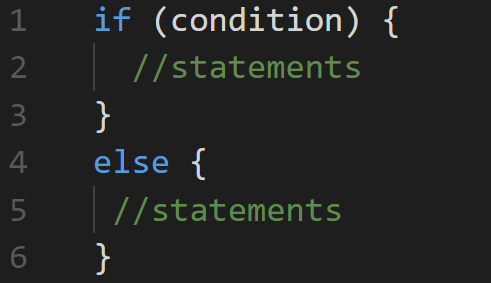
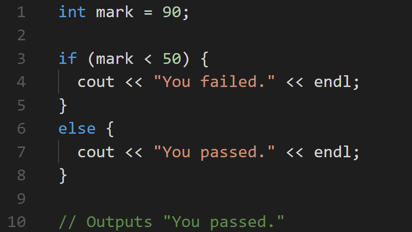
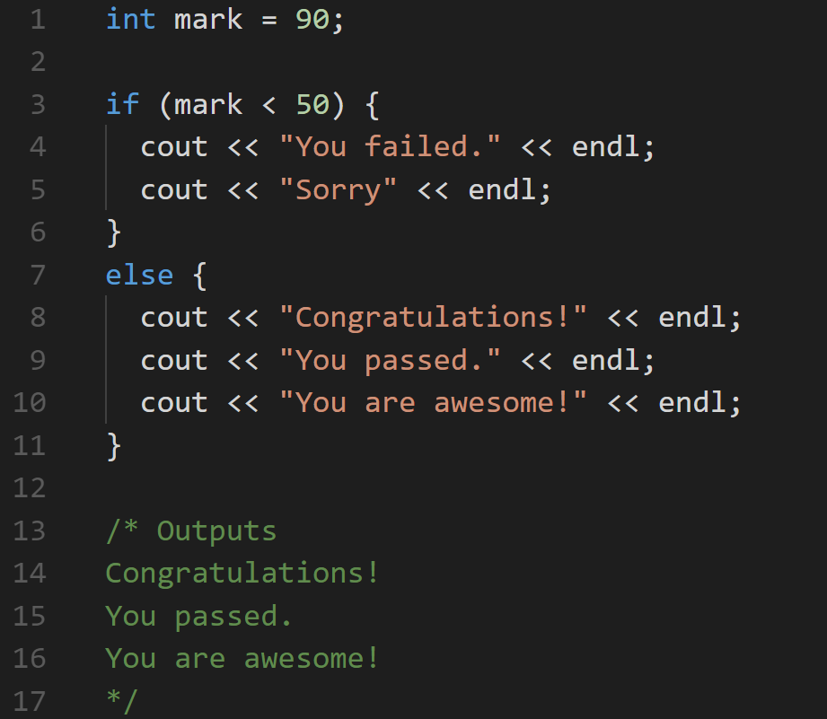
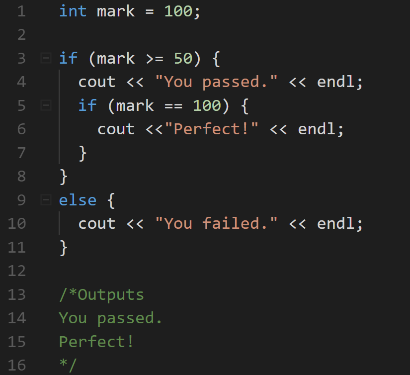
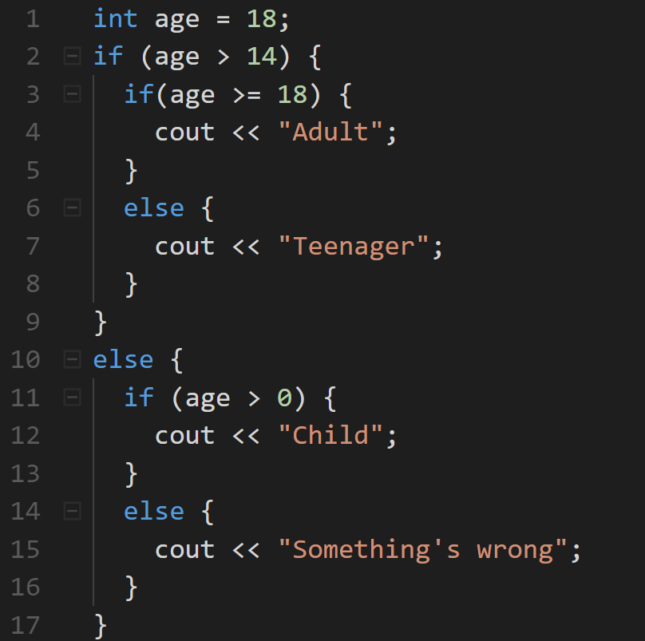
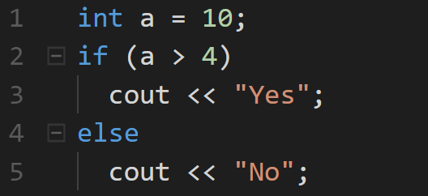

The else Statement
An if statement can be followed by an optional else statement, which executes when the condition is false.
Syntax:
The code above will test the condition:
- If it evaluates to true, then the code inside the if statement will be executed.
- If it evaluates to false, then the code inside the else statement will be executed.
When only one statement is used inside the if/else, then the curly braces can be omitted.
The else Statement
For example:
The else Statement
In all previous examples only one statement was used inside the if/else statement, but you may include as many statements as you want.
For example:
Nested if Statements
You can also include, or nest, if statements within another if statement.
For example:
Nested if else Statements
C++ provides the option of nesting an unlimited number of if/else statements.
For example:
Remember that all else statements must have corresponding if statements.
The if else Statement
In if/else statements, a single statement can be included without enclosing it into curly braces.
Including the curly braces anyway is a good practice, as they clarify the code and make it easier to read.